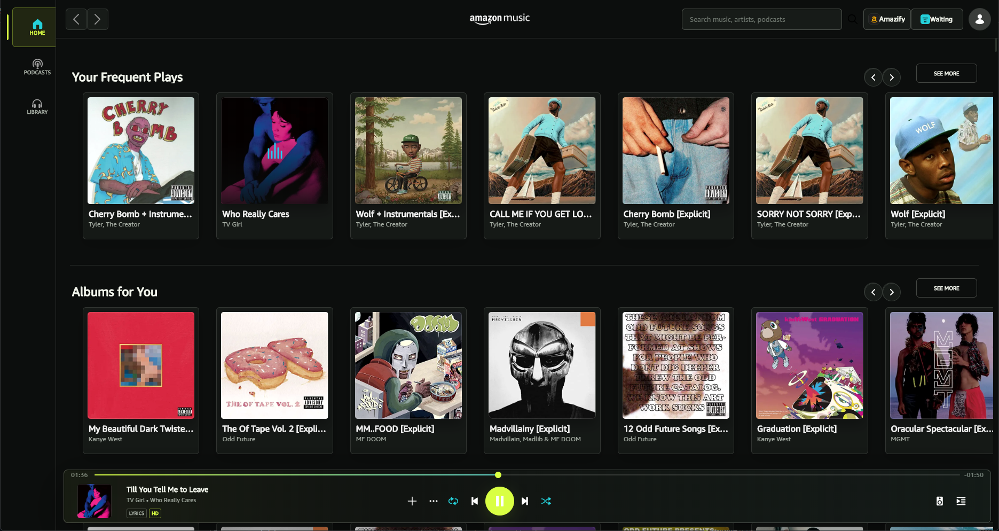
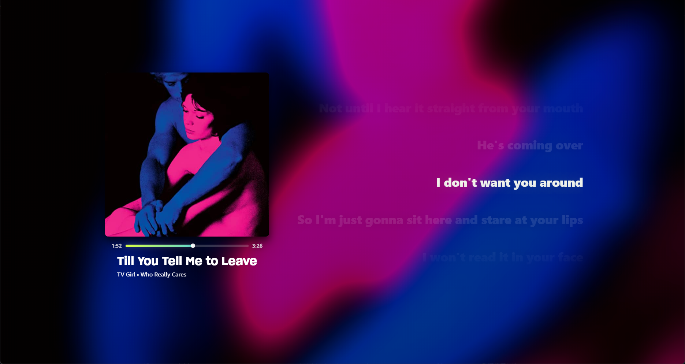

In-app marketplace
Install, update, reinstall, enable, and disable plugins from inside Amazon Music.
A Spicetify-inspired plugin platform for the official Amazon Music desktop app. Change its interface and behavior while Amazon Music keeps handling playback, accounts, downloads, notifications, and DRM.

The stock theme demonstrates how deeply a plugin can reshape navigation, content surfaces, typography, controls, textures, queue panels, settings, and Big Mode.
A full-interface theme with a compact navigation rail, reactive ambience, redesigned panels, and a floating transport built for quick scanning.
Album-derived ambience, synchronized lyrics, track information, full playback controls, and a draggable timeline share one full-window layout.

Designed around the song rather than the original utility panels. Instrumental tracks transition to a centered artwork layout when no lyrics are available.
Amazify attaches to a validated local Chromium DevTools target, injects its runtime, and loads only the plugins you explicitly enable.
Install, update, reinstall, enable, and disable plugins from inside Amazon Music.
Catalog packages pin a Git commit plus the SHA-256 and byte size of every file.
Opening the marketplace refreshes catalog versions and compares them with installed manifests.
Plugins can ship validated images, SVGs, fonts, JSON, JavaScript, and CSS.
Plugins can remove their DOM, styles, listeners, and runtime changes when disabled.
Privileged operations pass through a credentialed, allowlisted loopback bridge.
The installer handles the executable, CLI, daemon, uninstaller, and optional shortcuts. The official Amazon Music app remains the client you sign into and use.
Run the Windows installer and choose startup and shortcut options.
Open Amazon Music (Amazify) or run amazify run.
Open the in-app marketplace, download a plugin, then enable it.
Use marketplace updates and the verified application updater.
Downloaded plugins begin disabled. Hash verification proves that a file matches its catalog entry; it does not prove that third-party JavaScript is safe. Review the author, source, permissions, and pinned revision before enabling community code.
DevTools and bridge listeners bind to loopback and use session credentials and exact command allowlists.
Redirect validation, size limits, staged installs, and digests protect catalog and updater paths.
Security issues belong in GitHub private vulnerability reporting, not a public issue.
Install the open-source runtime, keep the official player, and choose exactly which customizations run.